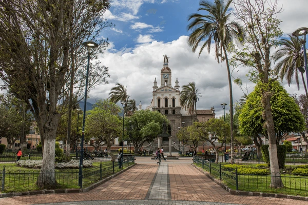

Cotacachi (oficialmente Santa Ana de Cotacachi) es una ciudad de la República de Ecuador. Está ubicada sobre la hoya del río Chota, en las laderas orientales del estratovolcán Cotacachi, en la parte oriental de los Andes y su altitud promedio es de 2418 m s. n. m. La ciudad está dividida en 2 parroquias urbanas,[3] las cuales se subdividen en barrios. En el censo de 2022 tenía una población de 10.526 habitantes, lo que la convierte en la nonagésima quinta ciudad más poblada del país. Forma parte del área metropolitana de Ibarra, pues su actividad económica, social y comercial está fuertemente ligada a Ambato, siendo "ciudad dormitorio" para miles de trabajadores que se trasladan a aquella urbe por vía terrestre diariamente. El conglomerado alberga a más de 280.000 habitantes.